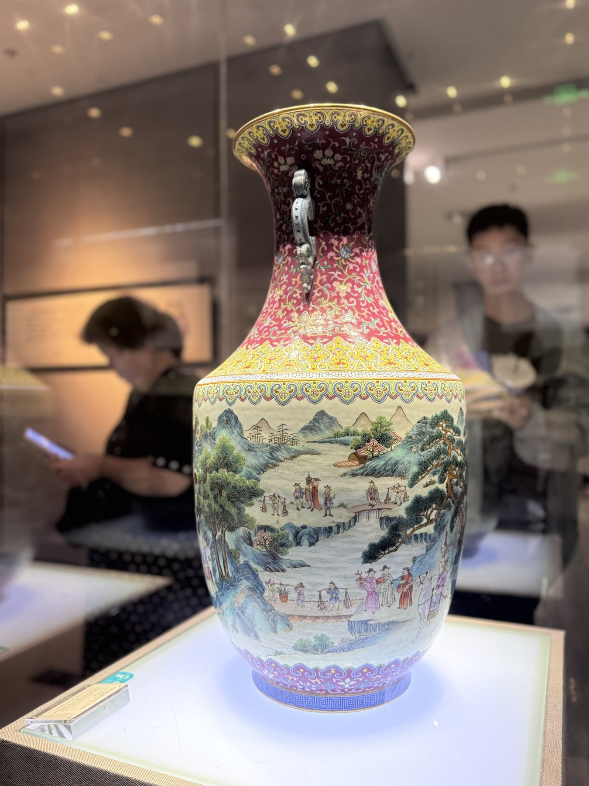

A sociology of standardization
From Jingdezhen porcelain to fast food, corporate R&D, and popular music — one mechanism, four domains.
01 — The observation
The galleries move chronologically. Sophistication climbs for a thousand years — then, in the twentieth century, it flattens. Click an era below.
Burial figurines rendered with startling individuality. To offset a tax charged regardless of yield, potters invented the fu shao technique — stacking pieces rim-to-rim to raise kiln yield. Scarcity forced invention.
02 — The argument
03 — Situating the claim
Creativity is an intentional configuration of material and cultural elements that is unexpected for a given audience — shaped by structure, institutions, and context.
This paper sits on the antecedent side: what structure makes the configuring behavior happen at all.
A field's "restricted" pole answers to peer judgment; its "large-scale" pole answers to standardized production for a pre-existing, measured demand.
Each domain below instantiates that distinction in a different institutional form.
04 — The tool
Switch domains below. The diagram and the explanation update together — the shape never changes, only what fills it.
A macro condition shapes what individuals believe is rational to want; belief converts into a concrete action; the aggregation of many individuals' actions produces the macro-level outcome.
Click a corner or an arrow in the diagram for more detail.
05 — Why it holds
Kahneman & Tversky (1979): losses are weighted roughly 2–2.5× more heavily than equivalent gains. Toggle the frame below.
Tang-era taxation framed subsistence as the loss at stake. Only innovation avoided it — the risk-seeking choice tips the scale.
06 — Three domains
1967: Ray Kroc replaces McDonald's fresh, regionally sourced potatoes — from roughly 175 suppliers — with a single frozen product engineered by J.R. Simplot: fixed solids content, a "potato computer" timing every fry by oil temperature.
Consistency lowers risk; judgment introduces variance
Adopt computer-timed, pre-processed inputs
A globally uniform product — "McDonaldization"
Sustaining innovation is measurable, so KPI-driven organizations fund it. Disruptive innovation looks worse on existing metrics — and gets starved. The 1975–1994 disk-drive industry shows this at every size transition; flash memory relived it against the hard drive decades later.
Sustaining, measurable proposals are the safe ones to fund
Resources concentrate on sustaining innovation
Incumbents displaced by entrants they never funded
1991: Nielsen SoundScan replaces subjective chart reporting with point-of-sale data. From 2007, streaming and skip-rate data are folded in. Success shifts from a deliberate purchase to a continuously logged engagement signal.
A listener not seized in seconds will skip
Compress intros, simplify harmony, front-load the hook
A more homogeneous musical landscape
07 — A competing account
Burt (2004): brokers spanning "structural holes" generate more novel ideas. Uzzi & Spiro (2005): Broadway's most creative periods matched a "small-world" balance of tightly and loosely connected collaborators.
Creativity falls wherever measurable incentives penalize deviation — regardless of network structure.
Creativity falls specifically where standardization reduces structural diversity — incentives held constant.
Adjudicating between them needs network and longitudinal data beyond this paper's scope.
08 — Conclusion
What disappeared in Jingdezhen's later galleries was not standardization's arrival — the kilns had lived inside standardizing pressure for a millennium.